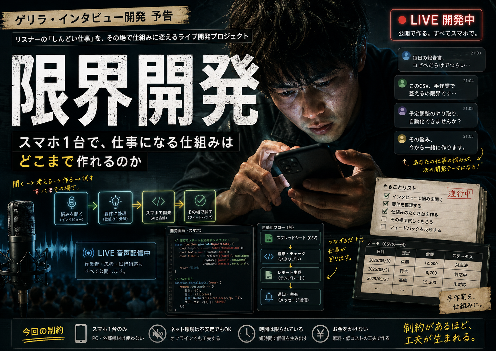

限界開発とは何か
生活が安定してから何かを作るのではない。
生活が崩れかけている最中に、AIを相談相手・設計者・実装者・監査役として使い、今日を越えるための仕組みを作る。
完成品だけでなく、失敗、混乱、体調、資金不足、設計変更、壊れたUI、動かなかったサーバー、やり直しまで公開し、「限界状態の人間でもどこまで生活を再構築できるか」を検証します。
開始条件は、だいたい最悪
📱
道具実質スマホ1台。PCや高価な機材を前提にしない。
🫀
心身精神・肉体の状態が安定しているとは限らない。止まる日も含めて設計する。
¥
資金金で性能や人手を買えない。無料枠、弱いサーバー、既存契約を組み合わせる。
⌛
時間長時間集中できる前提を置かない。短い指示と再開可能な記録でつなぐ。
0
技術プログラム素人から開始。理解できない部分はAIと対話し、仕様と判断を残す。
🔥
それでも生活は待ってくれない。必要なら、使う道具そのものから作る。
社会実験プロトコル
困る
生活や仕事の詰まりを、そのまま観測する。
生活や仕事の詰まりを、そのまま観測する。
AIと分解
感情・事実・作業・判断を分ける。
感情・事実・作業・判断を分ける。
仕組みにする
最小限動く道具、手順、記録を作る。
最小限動く道具、手順、記録を作る。
自分で使う
実生活で踏み抜き、直し、また使う。
実生活で踏み抜き、直し、また使う。
公開して残す
成功も失敗も、次の人が追試できる形にする。
成功も失敗も、次の人が追試できる形にする。
相談 → 仕様 → 実装 → テスト → 公開だけではなく、体調悪化、資金制約、途中停止、再開、収益化までを同じ系の中で扱います。
生活を回すために生えたもの
RTSAIに丸投げせず、仕様・判断・実行・監査・引き継ぎを残すための共通基盤。
Vlog Wizard既存の動画編集で挫折したため、「撮る・並べる・喋る・出す」だけを通す動画制作システム。
限界開発式デバッグエンジン人力デバッグで潰れないよう、一度踏んだ不具合を再現テストと共通知識へ変える生命維持装置。
視覚ナビゲーションマップどのボタンがどこへつながるかをスクリーンショットと線で可視化し、UIの迷路を監査する。
公開・配布・運用基盤作ったものを自分だけで終わらせず、技術交流と仕事の接点へ変える。
生活防衛の記録仕事、医療、収入、移動、体調、開発を別々にせず、同じ生活の問題として扱う。
この実験で証明したいこと
- 能力がないのではなく、使える道具と手順が合っていないだけという人は多い。
- AIは「答えを出す機械」ではなく、記憶、分解、設計、実行、監査を補う生活インフラになり得る。
- 限界状態では、万能な完成品より、今日の詰まりを一つ減らす小さな仕組みの方が強い。
- 失敗と再開方法まで残せば、素人の試行錯誤も他人が使える知識になる。
- 生活を立て直す過程そのものが、仕事・技術・価値へ変わり得る。
このリポジトリに残すもの
problem/ 何に困っていたか
context/ 体調・資金・端末・時間などの制約
spec/ AIと決めた仕様と、やらないこと
build/ 実装、構成、接続先、運用方法
test/ 自動テスト、人間の確認、踏んだ不具合
failure/ 動かなかった理由、判断ミス、作り直し
recovery/ 途中から再開するための記録
release/ 公開物、使い方、限界、自己責任範囲
income/ 生活・仕事・収益へどう接続したか
デバッグエンジンは重要な一部ですが、限界開発の主役ではありません。主役は、制約だらけの人間が生活を止めないために、必要な技術と運用を獲得していく過程です。
これは成功物語ではない
完成を演出しません。動いていないものは未確認、失敗したものは失敗、体調や生活上の理由で止まったものは停止として残します。
同時に、限界状態や苦痛を美化もしません。危険な状態を我慢して開発することを推奨する企画ではなく、現実の制約を隠さず、安全線を引きながら、生存可能性を増やすための実験です。